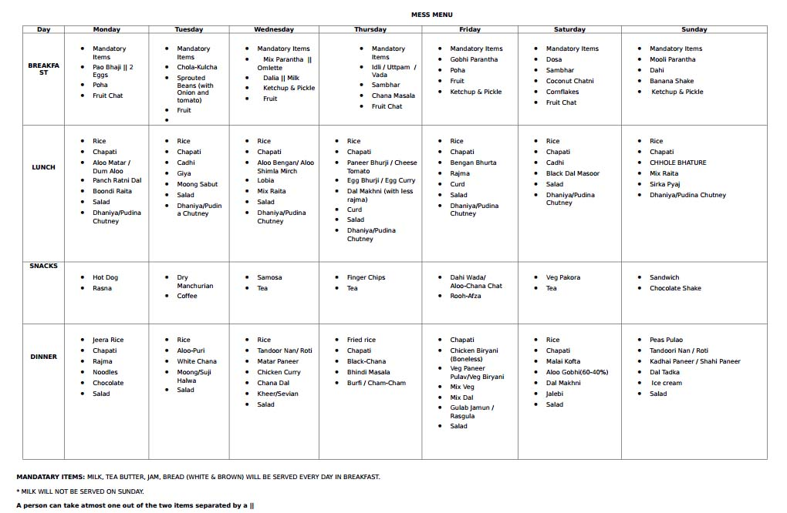

Hostel Life
1. How are hostels allotted to freshmen? Does my hostel change every year?
Entire first year is allotted a single hostel (separate hostel for girls). Room allotment is completely random. For boys, four students are accommodated in one room in order to allow better interaction within your batch. Hostel changes only after completing two academic years in college wherein two students stay in one room. Special request is to be made for changing hostel room.
2. I have never lived in a hostel before. What should I expect from IIT hostels?Hostel life is going to be very different from your home. At beginning you may feel the need of larger rooms where lesser number of students live in, but at the end of your stay, you would be crying to stay back. You are going to cherish your hostel memories for the rest of our life.
3. What facilities are available in the hostel?Facilities including barber shop, laundry service (paid), a well-equipped gymnasium, common room (TV room which is no less than a theatre during cricket and football finals), RO filtered water, open terrace, gallery for better ventilation, restroom with geyser (shared between two rooms), individual cupboards/Godrej almirah for storage, a table and a chair for each student, Wi-Fi zone and lastly four high speed LAN ports (unlimited data download) are available in each room which also enable intra-hostel data sharing.
4. What about the mess food? Is the food really tasty and healthy? Do we have a say in the menu?There is Mess-1 for Jupiter, Neptune and Venus hostels and Mess-2 for Mercury hostel. Mess fees is included in the hostel fee itself and is to be paid every semester. Apart from this, night canteen is available (until 3 in the morning) and also a regular canteen in daytime.
Quite honestly, saying that mess food is tasty would somewhat be an overstatement when you would be coming here after having eaten home-cooked food for almost 18 years of your life. However, it is hygienic, nutritious, filling and already paid for. A weekly menu is decided at a periodic interval for the hostel. In case for a change, there are many places outside the campus where you can eat. Every resident has a say in deciding the weekly mess menu. There is a complaint register available in the mess in case you find the quality of food degraded. Feedback is always welcomed. For immediate actions you can contact your hostel Mess Secretary.This is an example of mess menu that we have.(Keeps changing a bit seasonally.) 
5. Is there any ragging at IIT Ropar? What if some senior approaches us?IIT Ropar has a zero tolerance policy. We do not accept ragging in any form. In case of any uncomfortable situation arising, please inform us as soon as possible. It is to be noted however, that seniors might approach you and interact with you asking you simple questions regarding your branch, hometown, personal interests, hobbies etc. If at any point of the interaction you feel uncomfortable, you must let know the senior and be rest assured that he/she will leave you alone. In case he/she doesn't, you can always contact the authorities.
6. What about cleanliness in hostels?Your room and restroom is cleaned daily by the sweepers. However, to maintain cleanliness is your own responsibility. In case of improper functionality you can contact the caretaker or Hostel Secretary of your hostel.
7. What about weather in Ropar?Weather at Ropar is hot and humid in summers extending till the end of July. You are suggested to keep handkerchief/napkin with you. Monsoon is pretty pleasant starting from August to mid-September. Winter starts from October and extends till first week of February with temperature as low as 5-6 degrees. You are advised to get warm winter clothing during December and January.
8. What about security and medical facilities?Security guards guard your hostel as well as campus all the time. You don't need to worry about security. Medical centre is present right outside your hostel. A doctor and a nurse are always present to treat any medical emergency at any point of time. College ambulance is also available at the service.
Infrastructure & Extra-curricular
1. What about college library?
There is a 24*7 college library available to the students. The institute library (our home during exams) has wide range of texts of the latest publications. It also has renowned journals and magazines. The library provides LAN and Wi-Fi for access to online information. It also has an online catalogue named OPAC. Through this you can search for, and reserve books from your room, before even coming to the library.
2. I like playing sport. What are the sporting facilities available at IIT Ropar?Sports is a major part of a student's life. It is encouraged to play at least one sport. Sporting facilities that are made available are:
a. A basketball court
b. Three tennis courts
c. One cricket ground
d. Two volleyball courts
e. One football ground
f. A ground for athletic events
g. Two badminton courts (MP Hall)
h. A hockey ground
i. Two Table Tennis tables (MP Hall)
Moreover, college provides certain number of sporting instruments too. It is advised to the students to get their own sports instruments. In case you need anything you can always contact the Sports Secretary or the respective sport representative. Coaches are also available to train you for learning the sport as well as Inter-IIT Sports Meet.
Yes, there is a multipurpose hall (MP Hall) in the academic block of the college where all the cultural events like Fresher's Night are held.
4. What about the classrooms and laboratories in the college?There are air-conditioned as well as non-air-conditioned classrooms available in the college on first floor of the Academic Block. Different laboratories like Physics, Chemistry, Computer and Design & Manufacturing are made available with well-equipped and advanced machinery. It is made sure that students are well instructed before starting any working session. Practical approach is the key to learning which is encouraged.
5. I like dancing/music/working out. Are these facilities available?Music, dance and gym, all these come under the SAC (Student Activity Centre). There is a dance room in the Neptune hostel which can be used till 12'o clock in midnight. A music room is available behind the Neptune hostel with certain musical instruments. For all those who like working out, there is a well-equipped gymnasium right next to the dance room. You can contact the respective representatives if you need anything.
6. Like old IITs, any cultural fest is organized?'Zeitgeist-The spirit of the times', waiting for another outstanding year. This is our annual cultural fest generally held in the month of October. This fest will be as enjoyable and mesmerizing as the ones held in old IITs. Various cultural and fun events are held where students from different colleges participate. IIT Ropar itself has been participating in the events since the fest started.
7. Which are the various clubs/societies working in the college?Clubs which work actively in the college are:
1) Enigma (Quiz and Puzzles Club)
2) Robotics Club
3) Coding Club
4) Video Editing and Animation Club
5) Astronomy Club
6) Fine Arts Club
7) Literary Society
8) Public speaking Club
9) Chess Club
10) Arturo (Photography Club)
11) Music Club
12) Dance Club
13) Advitiya (Dramatics Society)
Apart from these clubs we have other organisations that are very much active in their working like SME (Society of Mechanical Engineers), Enactus and BloodConnect. In the first week of the academic year, the representatives will conduct an orientation programme telling the freshers about the different clubs/organisations and their activities. The doors of these clubs are always open for all. It is mandatory for every student to be active in at least one club/organization. You all have struggled a lot for the past two years sacrificing many things, this is your opportunity, seize it.
Well, when you stay away from your home it's natural for you to feel homesick. Sooner or later, you will adapt to the typical 'IIT Life' and no longer feel homesick. Apart from this, there is a Counselling Centre available at Academic Block of the college with qualified counsellor. You can visit the centre in the declared timings. Confidentiality is strictly maintained. 'A friend in need, is a friend indeed.' as the saying goes, you can always communicate things with your friends. Nevertheless, they are always ready to help you out in your bad times.Also there is no need to specifically mention, we the seniors are always eager and ready to help you people out incase of any kind of problem. So approach us without any hesitation.
Academics
1.How is evaluation and grading done?
Evaluation in each semester comprises of a mid semester and an end semester exam, and quizzes, practicals etc. depending on the course and course coordinator.
Grading Scheme-Each subject has some credits, and the grade is assigned on the basis of the performance either relative or absolute as decided by the course coordinator. The various grades that can be assigned are:
| A | 10 |
| A- | 9 |
| B | 8 |
| B- | 7 |
| C | 6 |
| C- | 5 |
| D | 4 |
| E | 3 |
| F | 2 |
| I | Incomplete |
Grades upto D are considered pass, beyond D (ie E, F) are considered fail. However if a student cannot complete the course for some reason, he/she may be awarded an I.The final semester grade point is calculated as the credit weighted average of the grades. Eg. If a student has three courses in a semester say sub1,sub2 and sub3. Lets
| Subject | Credits | Grade |
|---|---|---|
| sub1 | 4 | B |
| sub2 | 3 | B- |
| sub3 | 4 | A- |
The semester grade point will be ( 4*8 + 3*7 + 4*9 )/( 4 + 3 + 4 ) = 8.09
2.What are the subjects taught during the first year?In the first year, all the students will be given an overview of all the three branches of engineering taught at IIT Ropar ie Computer Science, Electrical and Mechanical, so as to give the students the perspective of different fields of engineering also that would help students who might opt for a change in their branch.
3.Are there any scholarships or fee concession programs we can apply for?The institute offers Merit-cum-Means scholarship to about 25% of the students. The recipients of the scholarship are exempted from paying the tuition fee and get a scholarship of Rs.1000/- per month. The criteria for the same are based on the ALL INDIA RANK (AIR) in the JEE and Means (only those students are eligible, whose parental income is below Rs.4.5 lac per annum). Further as per IIT rules, there is a limit that the total scholarship received from all sources for a student should not exceed Rs.50,000/- per annum. IIT Ropar also provides Institute Free Studentship to 10% of the students on the basis of means only. The recipients of the free studentship are exempted from paying the tuition fee. The criterion of 10% free studentship is similar to that of MCM Scholarship. Also all SC and ST category students are given full tuition fee waiver irrespective of their parent's / guardian's income. Besides these, the institute also offers merit prizes and certificates to the top 7% of the students of each 4-year B. Tech program for 1st and 2nd Semester. The value of the merit prize is Rs.2500/-. Many other organizations in India and Abroad also offer some assistance to the students of IIT Ropar.